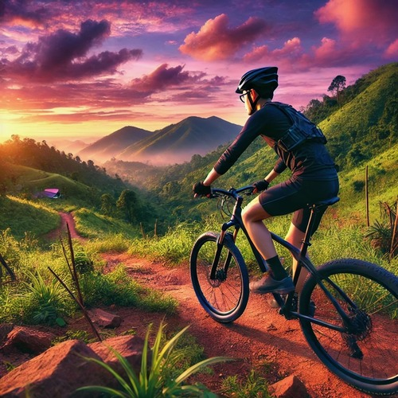
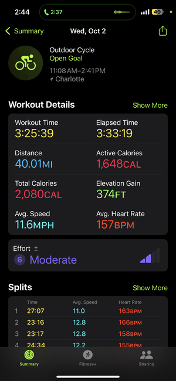
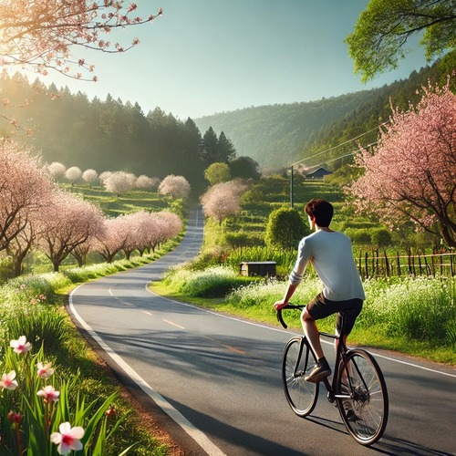
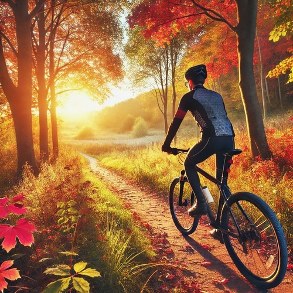
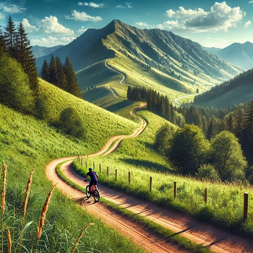
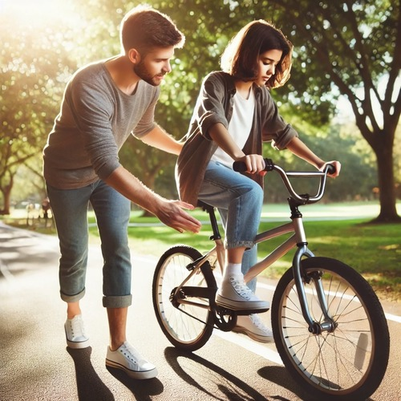

Biking is a fun, eco-friendly, and healthy way to get around, whether for commuting, exercise, or leisure. It provides an excellent cardiovascular workout, strengthens muscles, and improves overall endurance while being gentle on the joints. Cycling is also a great way to explore new places, enjoy scenic routes, and reduce stress by spending time outdoors. Additionally, it’s an environmentally friendly mode of transportation that helps reduce traffic congestion and carbon emissions. Whether you’re riding through city streets, tackling rugged mountain trails, or cruising along a peaceful countryside road, biking offers a sense of freedom and adventure that few other activities can match.
Biking is a versatile activity that suits people of all ages and fitness levels. It can be a high-intensity sport, such as road racing or mountain biking, or a relaxing way to commute and run errands. Many cities have embraced cycling by adding bike lanes and bike-sharing programs, making it easier and safer for riders to navigate urban areas. Beyond physical benefits, biking also contributes to mental well-being by reducing stress and boosting mood through the release of endorphins. Whether riding solo for peaceful reflection or with a group for social connection, biking is an enjoyable and rewarding way to stay active while embracing a more sustainable lifestyle.
Hey there! I’m a biking enthusiast who loves the thrill of the open road and the challenge of new trails. Whether it’s cruising through city streets or tackling rugged mountain paths, cycling is my way of staying active, exploring new places, and clearing my mind. When I’m not on my bike, you can probably find me planning my next ride or discovering new gear to enhance the experience. Let’s ride! 🚴♂️
Beyond biking, I enjoy the sense of freedom and adventure that comes with being outdoors. There’s something special about the wind in my face, the rhythmic turning of the pedals, and the satisfaction of pushing my limits. I also love connecting with fellow riders, sharing stories, and finding new routes that make every journey exciting. No matter the destination, for me, the ride itself is always the best part.



The best time to go biking largely depends on the season and personal preference, but generally, early mornings and late afternoons are ideal. Riding in the early morning allows you to enjoy cooler temperatures, fewer crowds, and a peaceful atmosphere as the world wakes up. Late afternoons, especially during the golden hour before sunset, offer stunning views and a pleasant climate, making for a more relaxing ride. For those commuting or fitting cycling into a busy schedule, lunchtime or early evening rides can also work, provided the temperatures are comfortable. It’s important to avoid the peak heat of midday, especially in summer, to prevent exhaustion and dehydration.
When it comes to seasons, spring and fall are often considered the best for biking. Spring brings fresh air, blooming scenery, and moderate temperatures, making it perfect for long rides. Fall, on the other hand, offers crisp air and beautiful foliage, creating a scenic and comfortable experience. Summer can be great for cycling if you ride early in the morning or later in the evening to avoid extreme heat. Winter biking is possible with the right gear, such as thermal clothing and fat-tire bikes for snow, but it requires more preparation. No matter the season, planning your rides around weather conditions and daylight hours ensures a safer and more enjoyable experience.

Biking is an exhilarating way to explore nature, stay active, and enjoy scenic routes. Some of the best locations for biking include national parks, coastal trails, and dedicated urban bike paths. For breathtaking mountain views, destinations like Moab, Utah, and Whistler, Canada, offer thrilling trails for both beginners and advanced riders. Coastal routes such as California’s Pacific Coast Highway and Florida’s Overseas Highway provide stunning ocean views and smooth rides. Cities like Amsterdam and Copenhagen are famous for their bike-friendly infrastructure, making urban cycling both safe and enjoyable. Whether you’re looking for challenging mountain trails, long-distance road cycling, or peaceful nature paths, the world is full of fantastic biking destinations.
| # | Location | Terrain Type | Difficulty Level |
|---|---|---|---|
| 1 | Moab, Utah | Mountain Trails | Advanced |
| 2 | Whistler, Canada | Mountain Trails | Intermediate |
| 3 | Amsterdam, Netherlands | Urban Bike Paths | Easy |
| 4 | Pacific Coast Highway, USA | Coastal Road | Intermediate |
| 5 | Overseas Highway, Florida | Coastal Road | Easy |
| 6 | Copenhagen, Denmark | Urban Bike Paths | Easy |
| 7 | Great Divide Trail, USA | Gravel & Off-road | Advanced |

Learning to bike is a fun and rewarding experience that builds confidence and coordination. To start, find a safe, open area like a park or an empty parking lot.
Biking is an excellent activity that promotes both physical and mental well-being. It provides a low-impact cardiovascular workout that strengthens the heart, muscles, and joints while reducing the risk of chronic diseases such as obesity, diabetes, and heart disease. Unlike driving, cycling is an eco-friendly mode of transportation that reduces carbon emissions and helps protect the environment. Additionally, biking can improve mental health by reducing stress, boosting mood, and enhancing focus through exposure to fresh air and nature. Whether for commuting, exercise, or leisure, biking is a cost-effective and enjoyable way to stay active and explore new places while contributing to a healthier lifestyle.
| Prompt | Response | Model |
|---|---|---|
| Write a paragraph about biking | Biking is a fun, eco-friendly, and healthy way to get around, whether for commuting, exercise, or leisure. It provides an excellent cardiovascular workout, strengthens muscles, and improves overall endurance while being gentle on the joints. Cycling is also a great way to explore new places, enjoy scenic routes, and reduce stress by spending time outdoors. Additionally, it’s an environmentally friendly mode of transportation that helps reduce traffic congestion and carbon emissions. Whether you’re riding through city streets, tackling rugged mountain trails, or cruising along a peaceful countryside road, biking offers a sense of freedom and adventure that few other activities can match. | 4o |
| write another paragraph about it | Biking is a versatile activity that suits people of all ages and fitness levels. It can be a high-intensity sport, such as road racing or mountain biking, or a relaxing way to commute and run errands. Many cities have embraced cycling by adding bike lanes and bike-sharing programs, making it easier and safer for riders to navigate urban areas. Beyond physical benefits, biking also contributes to mental well-being by reducing stress and boosting mood through the release of endorphins. Whether riding solo for peaceful reflection or with a group for social connection, biking is an enjoyable and rewarding way to stay active while embracing a more sustainable lifestyle. | 4o |
| generate an image of someone biking | [IMAGE] Here is the generated image of a person biking on a scenic mountain trail during sunset. Let me know if you’d like any modifications! 🚴♂️🌄 | 4o |
| generate an image of a computer thinking | [IMAGE] Here is the generated image of a futuristic computer deep in thought, with a glowing AI brain and a high-tech environment. Let me know if you’d like any modifications! 🤖💭 | 4o |
| write an about me I like biking | Hey there! I’m a biking enthusiast who loves the thrill of the open road and the challenge of new trails. Whether it’s cruising through city streets or tackling rugged mountain paths, cycling is my way of staying active, exploring new places, and clearing my mind. When I’m not on my bike, you can probably find me planning my next ride or discovering new gear to enhance the experience. Let’s ride! 🚴♂️ | 4o |
| write another paragraph | Beyond biking, I enjoy the sense of freedom and adventure that comes with being outdoors. There’s something special about the wind in my face, the rhythmic turning of the pedals, and the satisfaction of pushing my limits. I also love connecting with fellow riders, sharing stories, and finding new routes that make every journey exciting. No matter the destination, for me, the ride itself is always the best part. | 4o |
| write 2 paragraphs about the best times, schedule, and seasons to do biking in | The best time to go biking largely depends on the season and personal preference, but generally, early mornings and late afternoons are ideal. Riding in the early morning allows you to enjoy cooler temperatures, fewer crowds, and a peaceful atmosphere as the world wakes up. Late afternoons, especially during the golden hour before sunset, offer stunning views and a pleasant climate, making for a more relaxing ride. For those commuting or fitting cycling into a busy schedule, lunchtime or early evening rides can also work, provided the temperatures are comfortable. It’s important to avoid the peak heat of midday, especially in summer, to prevent exhaustion and dehydration. When it comes to seasons, spring and fall are often considered the best for biking. Spring brings fresh air, blooming scenery, and moderate temperatures, making it perfect for long rides. Fall, on the other hand, offers crisp air and beautiful foliage, creating a scenic and comfortable experience. Summer can be great for cycling if you ride early in the morning or later in the evening to avoid extreme heat. Winter biking is possible with the right gear, such as thermal clothing and fat-tire bikes for snow, but it requires more preparation. No matter the season, planning your rides around weather conditions and daylight hours ensures a safer and more enjoyable experience. | 4o |
| now generate two images | [IMAGE 1] [IMAGE 2] Here are two images showcasing the beauty of biking in different seasons: one in a vibrant autumn setting and the other in a fresh, blooming spring landscape. Let me know if you’d like any adjustments or more images! 🚴♂️ | 4o |
| Write a paragraph on best locations for biking and then create a table and generate a picture | [Table] Biking is an exhilarating way to explore nature, stay
active, and enjoy scenic routes. Some of
the best locations for biking include national parks, coastal trails, and dedicated urban bike paths.
For breathtaking mountain views, destinations like Moab, Utah, and Whistler, Canada, offer thrilling
trails for both beginners and advanced riders. Coastal routes such as California’s Pacific Coast Highway
and Florida’s Overseas Highway provide stunning ocean views and smooth rides. Cities like Amsterdam and
Copenhagen are famous for their bike-friendly infrastructure, making urban cycling both safe and
enjoyable. Whether you’re looking for challenging mountain trails, long-distance road cycling, or
peaceful nature paths, the world is full of fantastic biking destinations.
I’ll generate a table with some of the best biking locations worldwide, including the type of terrain and difficulty level. [Image] I’ve generated a table with some of the best biking locations along with their terrain types and difficulty levels. Additionally, here’s a scenic biking trail image showcasing a beautiful mountainous landscape, perfect for both adventure and leisure biking. Let me know if you need more details! 🚴♂️🏞️ |
4o |
| Write a paragraph about how to bike with steps and generate an image of someone showing someone how to bike | Learning to bike is a fun and rewarding experience that builds confidence and coordination. To start,
find a safe, open area like a park or an empty parking lot. Step 1: Adjust the seat so both feet can
touch the ground for balance. Step 2: Practice balancing by walking the bike forward with your feet,
then lifting them slightly to get used to the motion. Step 3: Start pedaling slowly while keeping your
eyes forward and hands firmly on the handlebars. Step 4: Learn to brake smoothly by gently squeezing the
brakes rather than stopping suddenly. Step 5: Once comfortable, practice turning by leaning slightly and
steering in the direction you want to go. With patience and practice, anyone can master biking and enjoy
the freedom of the ride!
[IMAGE] Now, I’ll generate an image of someone teaching another person how to bike. 🚴♂️👨🏫 I’ve created an image of a person teaching another how to ride a bicycle in a park. It captures the learning process in a bright and friendly setting. Let me know if you need any adjustments! 🚴♂️🌞 |
4o |
| generate a 500x500 image of a man thinking | [IMAGE] Here is the image of a man deep in thought. Let me know if you need any modifications! | 4o |
| generate a paragraph on why you should do biking | Biking is an excellent activity that promotes both physical and mental well-being. It provides a low-impact cardiovascular workout that strengthens the heart, muscles, and joints while reducing the risk of chronic diseases such as obesity, diabetes, and heart disease. Unlike driving, cycling is an eco-friendly mode of transportation that reduces carbon emissions and helps protect the environment. Additionally, biking can improve mental health by reducing stress, boosting mood, and enhancing focus through exposure to fresh air and nature. Whether for commuting, exercise, or leisure, biking is a cost-effective and enjoyable way to stay active and explore new places while contributing to a healthier lifestyle. | 4o |
| generate a list without bullets or numbers about the benefits of biking | Improves cardiovascular health Strengthens muscles and joints Burns calories and aids in weight management Reduces stress and improves mental health Boosts mood and overall well-being Eco-friendly and reduces carbon footprint Saves money on fuel and transportation costs Enhances coordination and balance Provides a low-impact exercise option Allows exploration of new places and scenic routes | 4o |
| now surround the entire thing in a ul element and each line in li elements |
|
4o |